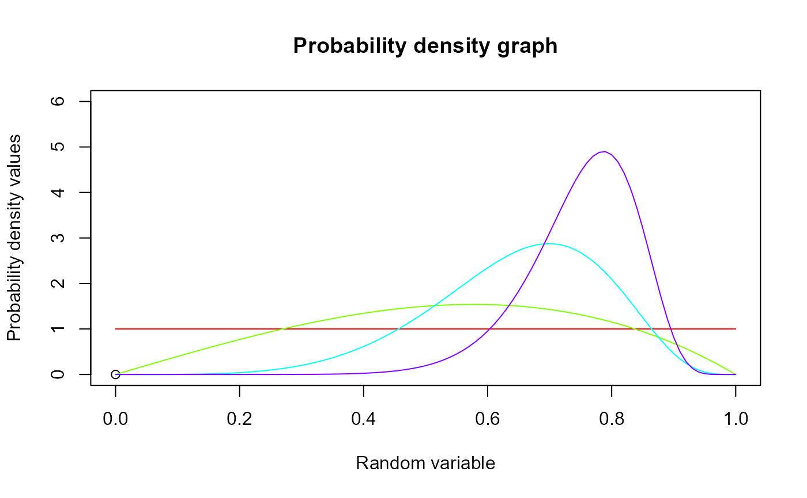
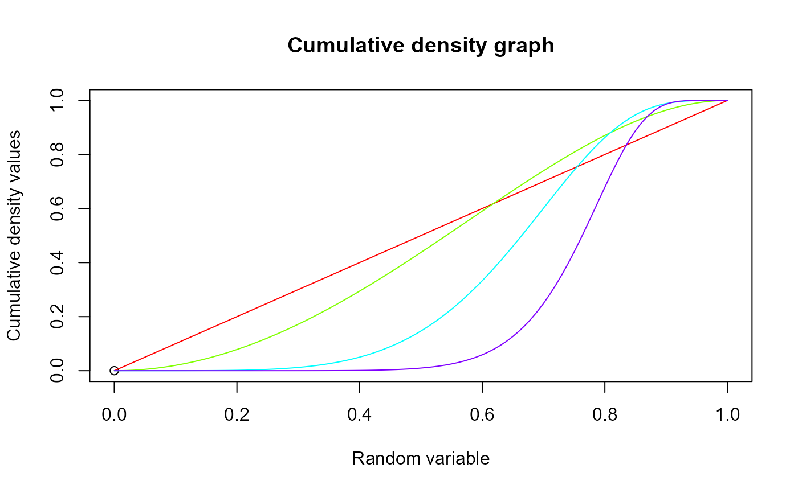

These functions provide the ability for generating probability density values, cumulative probability density values and moment about zero values for the Kumaraswamy Distribution bounded between [0,1].
Arguments
- r
vector of moments.
- a
single value for shape parameter alpha representing as a.
- b
single value for shape parameter beta representing as b.
Details
The probability density function and cumulative density function of a unit bounded Kumaraswamy Distribution with random variable P are given by
$$g_{P}(p)= abp^{a-1}(1-p^a)^{b-1} $$ ; \(0 \le p \le 1\) $$G_{P}(p)= 1-(1-p^a)^b$$ ; \(0 \le p \le 1\) $$a,b > 0$$
The mean and the variance are denoted by $$E[P]= bB(1+\frac{1}{a},b)$$ $$var[P]= bB(1+\frac{2}{a},b)-(bB(1+\frac{1}{a},b))^2$$
The moments about zero is denoted as $$E[P^r]= bB(1+\frac{r}{a},b)$$ \(r = 1,2,3,...\)
Defined as \(B(a,b)\) is the beta function.
NOTE : If input parameters are not in given domain conditions necessary error messages will be provided to go further.
References
Kumaraswamy P (1980). “A generalized probability density function for double-bounded random processes.” Journal of hydrology, 46(1-2), 79--88. Jones MC (2009). “Kumaraswamy’s distribution: A beta-type distribution with some tractability advantages.” Statistical methodology, 6(1), 70--81.
Examples
#plotting the random variables and probability values
col <- rainbow(4)
a <- c(1,2,5,10)
plot(0,0,main="Probability density graph",xlab="Random variable",ylab="Probability density values",
xlim = c(0,1),ylim = c(0,6))
for (i in 1:4)
{
lines(seq(0,1,by=0.01),dKUM(seq(0,1,by=0.01),a[i],a[i])$pdf,col = col[i])
}

dKUM(seq(0,1,by=0.01),2,3)$pdf #extracting the probability values
#> [1] 0.000000000 0.059988001 0.119904019 0.179676146 0.239232614 0.298501875
#> [7] 0.357412666 0.415894084 0.473875661 0.531287429 0.588060000 0.644124631
#> [13] 0.699413299 0.753858776 0.807394694 0.859955625 0.911477146 0.961895914
#> [19] 1.011149741 1.059177659 1.105920000 1.151318461 1.195316179 1.237857806
#> [25] 1.278889574 1.318359375 1.356216826 1.392413344 1.426902221 1.459638689
#> [31] 1.490580000 1.519685491 1.546916659 1.572237236 1.595613254 1.617013125
#> [37] 1.636407706 1.653770374 1.669077101 1.682306519 1.693440000 1.702461721
#> [43] 1.709358739 1.714121066 1.716741734 1.717216875 1.715545786 1.711731004
#> [49] 1.705778381 1.697697149 1.687500000 1.675203151 1.660826419 1.644393296
#> [55] 1.625931014 1.605470625 1.583047066 1.558699234 1.532470061 1.504406579
#> [61] 1.474560000 1.442985781 1.409743699 1.374897926 1.338517094 1.300674375
#> [67] 1.261447546 1.220919064 1.179176141 1.136310809 1.092420000 1.047605611
#> [73] 1.001974579 0.955638956 0.908715974 0.861328125 0.813603226 0.765674494
#> [79] 0.717680621 0.669765839 0.622080000 0.574778641 0.528023059 0.481980386
#> [85] 0.436823654 0.392731875 0.349890106 0.308489524 0.268727501 0.230807669
#> [91] 0.194940000 0.161340871 0.130233139 0.101846216 0.076416134 0.054185625
#> [97] 0.035404186 0.020328154 0.009220781 0.002352299 0.000000000
dKUM(seq(0,1,by=0.01),2,3)$mean #extracting the mean
#> [1] 0.4571429
dKUM(seq(0,1,by=0.01),2,3)$var #extracting the variance
#> [1] 0.04102041
#plotting the random variables and cumulative probability values
col <- rainbow(4)
a <- c(1,2,5,10)
plot(0,0,main="Cumulative density graph",xlab="Random variable",ylab="Cumulative density values",
xlim = c(0,1),ylim = c(0,1))
for (i in 1:4)
{
lines(seq(0,1,by=0.01),pKUM(seq(0,1,by=0.01),a[i],a[i]),col = col[i])
}

pKUM(seq(0,1,by=0.01),2,3) #acquiring the cumulative probability values
#> [1] 0.000000000 0.000299970 0.001199520 0.002697571 0.004792324 0.007481266
#> [7] 0.010761167 0.014628088 0.019077382 0.024103701 0.029701000 0.035862542
#> [13] 0.042580906 0.049847997 0.057655050 0.065992641 0.074850697 0.084218508
#> [19] 0.094084732 0.104437416 0.115264000 0.126551336 0.138285700 0.150452806
#> [25] 0.163037823 0.176025391 0.189399636 0.203144190 0.217242210 0.231676393
#> [31] 0.246429000 0.261481874 0.276816462 0.292413838 0.308254724 0.324319516
#> [37] 0.340588302 0.357040896 0.373656856 0.390415514 0.407296000 0.424277274
#> [43] 0.441338152 0.458457333 0.475613434 0.492785016 0.509950617 0.527088785
#> [49] 0.544178110 0.561197257 0.578125000 0.594940258 0.611622130 0.628149931
#> [55] 0.644503231 0.660661891 0.676606099 0.692316417 0.707773813 0.722959704
#> [61] 0.737856000 0.752445144 0.766710156 0.780634672 0.794202997 0.807400141
#> [67] 0.820211870 0.832624752 0.844626203 0.856204533 0.867349000 0.878049854
#> [73] 0.888298390 0.898086996 0.907409210 0.916259766 0.924634649 0.932531150
#> [79] 0.939947921 0.946885026 0.953344000 0.959327906 0.964841391 0.969890743
#> [85] 0.974483952 0.978630766 0.982342755 0.985633371 0.988518007 0.991014061
#> [91] 0.993141000 0.994920422 0.996376121 0.997534153 0.998422901 0.999073141
#> [97] 0.999518110 0.999793575 0.999937901 0.999992119 1.000000000
mazKUM(1.4,3,2) #acquiring the moment about zero values
#> [1] 0.6428571
mazKUM(2,2,3)-mazKUM(1,2,3)^2 #acquiring the variance for a=2,b=3
#> [1] 0.04102041
#only the integer value of moments is taken here because moments cannot be decimal
mazKUM(1.9,5.5,6)
#> [1] 0.6551253